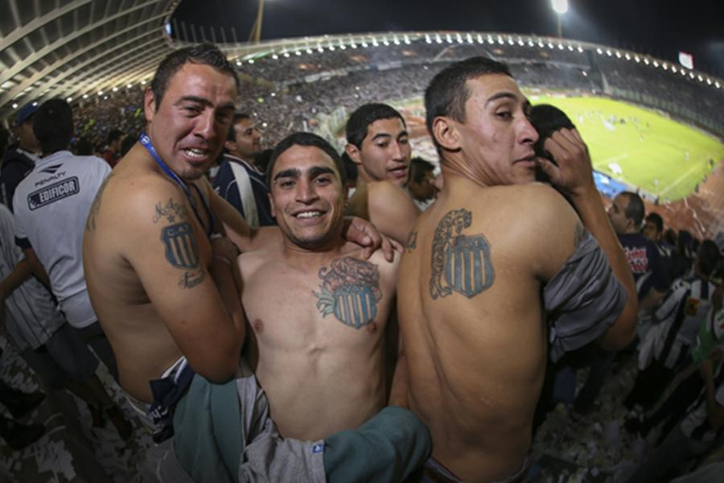
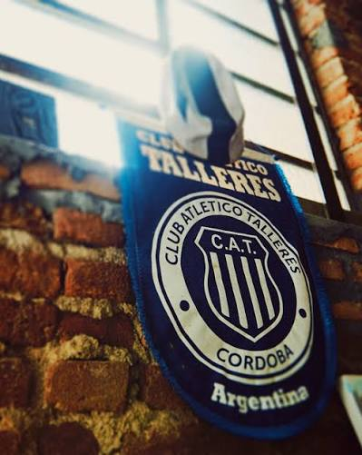
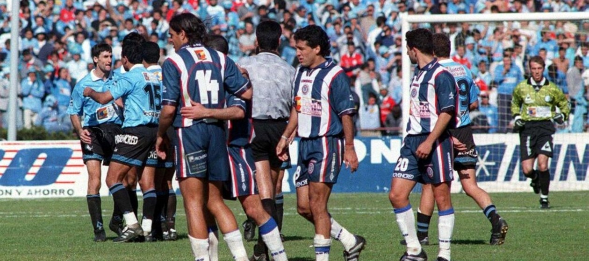

Talleres de Cordoba
El Club Atlético Talleres es una institución deportiva de la ciudad de Córdoba, Argentina. Es uno de los clubes más importantes de la provincia y cuenta con una gran cantidad de hinchas.
Sobre Talleres

Talleres se caracteriza por su historia y su identidad, pero por sobre todas las cosas, se caracteriza por el apoyo incondicional de su hinchada.
Caracteristicas principales del club:

- Provincia: Cordoba
- Colores: azul y blanco
- Socios actuales: 74mil socios activos
- Apodos: La T y Matador
Clasico

El clásico cordobés entre Talleres y Belgrano nació en 1914 , cuyo hito máximo fue la recordada "Final del Siglo" de 1998 que consagró a la "T"